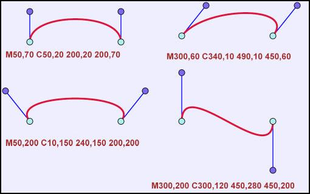

SVG - Scalabre Vector Graphics. Esse formato nada mais é do que um arquivo de texto. Isso mesmo! Um arquivo de texto que podemos abrir em qualquer editor e modificar. Claro que essa modificação deverá respeitar a estrutura de tags do XML e as predefinições do formato, mas o importante é que ele é extremamente acessível. Você pode abri-lo usando um programa com interface gráfica voltada para o desenho rederizado (convertido de texto para gráfico), ou mesmo editá-lo alterando os dados com, por exemplo o Bloco de notas do Windows. O SVG agrada tanto um usuário-padrão desses serviços, que está interessado principalmente na forma visual, como um programador ou gerenciador de servidores que pode lançar mão da alternativa para gerar arquivos mais agradáveis aos olhos (bonitos e bem-feitos) de forma automática, ou seja, criando scripts que geram arquivos sem a intervenção de um usuário.
Jogos? Dá para fazer joguinhos no SVG? Bem, dá para fazer joguinhos cruzando arquivos SVG com Javascript. Pouca gente sabe mas há a possibilidade de animar o SVG. Infelizmente é uma tecnologia nova e pouco suportada por browsers de Internet.
Como ao Javascript é uma tecnologia usada largamente, alguns sábios desenvolvedores principiaram a utilizá-la em conjunto com a beleza dos gráficos confeccionados no SVG. Como a quantidade de browsers que abrem arquivos SVG estéticos é muito grande, os joguinhos costuma funcionar em inúmeros deles. Dizem as boas idéias que o SVG será o Flash (SWF) open source.
As linhas de SVG podem ser encaixadas em originais do HTML com o uso do Tag do <embed>, do Tag do <object>, ou do Tag do <iframe>.
Abaixo de você deve ver trás métodos diferentes em como encaixar a lima de SVG no HTML page.
O Tag do <embed> é suportado em quase todos os browsers principais, e reserva scripting.
Nota: O visor do ad\F4be SVG
recomenda que voc\EA usa o
Tag ENCAIXAR ao encaixar SVG no HTML page! Entretanto, se voc\EA quiser
criar XHTML v\E1lido, voc\EA n\E3o pode usar o <embed> - o Tag
do
<embed> n\E3o \E9 alistado em nenhumas especifica\E7\F5es do HTML
Sintaxe:
Nota: O atributo do pluginspage aponta a um URL para o plugin ao download.
Ponta: Sustenta\E7\E3o do Internet Explorer um atributo adicional, wmode= " transparente ", que deixou o fundo do HTML page brilhar completamente.
O Tag do <object> \E9 um Tag HTML4 padr\E3o e \E9 suportado em todos os browsers. A desvantagem \E9 que n\E3o reserva scripting a l\EDngua.
Nota: Se voc\EA instalar a vers\E3o a
mais atrasada do
visor do ad\F4be SVG, as limas de SVG n\E3o trabalhar\E3o ao usar o Tag do
<object>.
Sintaxe:
Nota: Os pontos do atributo do codebase a um URL para que o plugin download
O Tag do <iframe> trabalha em quase todos os
browsers.
Sintaxe:
| Arquivo: teste.xml |
| <html
xmlns="http://www.w3.org/1999/xhtml"> <head> <title>SVG</title> </head> <body> <p style="background-color:#FF0000">This is an HTML paragraph</p> <svg xmlns="http://www.w3.org/2000/svg" width="300" height="100" style="border:solid" version="1.1" > <circle cx="100" cy="50" r="40" stroke="black" stroke-width="2" fill="red" /> </svg> </body> </html> |
| Resultado: |
| Preload |
| Preload |
| Fundo |
| Fundo Branco |
| Fundo Transparente |
| Fundo Colorido |
| Inserindo uma Imagem de Fundo |
| Cursor |
| Posição do Mouse (x, y) |
| Cursor de Estilo |
| Criando um Cursor Simples |
| Criando um Cursor Animado |
| Cursor Tail Effect |
| Imagem Simples | Gif Animado |
| *.jpg / *.png | *.gif |
|
| <svg xmlns="http://www.w3.org/2000/svg" xmlns:xlink="http://www.w3.org/1999/xlink" version="1.1" width="300" height="100" style="border:solid"> <a xlink:href="http://www.w3.org"> <rect x="30" y="30" width="200" height="40" fill="yellow" stroke="red" stroke-width="2" /> <text x="130" y="60" style="text-anchor:middle">My button</text> </a> </svg> |
| Resultado: |
| Figuras Geom\E9tricas 2D |
| Quadrado |
| XML | CSS | Javascript | jQuery | JSON |
| <svg
xmlns="http://www.w3.org/2000/svg"
version="1.1" width="200" height="200" style="border: 2px
solid black; background-color: rgb(253, 223, 253);"> <rect x="50" y="50" width="100" height="100" fill="green" stroke="black" stroke-width="5" > </rect> </svg> |
<svg
xmlns="http://www.w3.org/2000/svg"
version="1.1" width="200" height="200" style="border: 2px solid black;
background-color: rgb(253, 223, 253);"> <style type="text/css"> #css-test { fill:green; stroke:black; stroke-width:5; } </style> <rect id="css-test" x="50" y="50" width="100" height="100" > </rect> </svg> |
<html> <head> <title>Teste SVG</title> <meta http-equiv="Content-Type" content="text/html;charset=utf-8"> <script type="text/javascript" src="js-2d/jquery-3.4.1.min.js"></script> <script type="text/javascript" src="js-2d/svg/jquery.svg.js"></script> </head> <body> <script> $(function() { $('#svgbasics').svg({onLoad: desenhando}); }); function desenhando(){ var svg = $('#svgbasics').svg('get'); svg.rect( 50, 50, 100, 100, { fill: 'green', stroke: 'black', 'stroke-width': 5 } ); } </script> <div id="svgbasics" style="width:200; height:200;border: 2px solid black; background-color: rgb(253, 223, 253);" > </div> </body> </html> |
| Ret\E2ngulo |
| XML | CSS | Javascript | jQuery | JSON |
| <svg
xmlns="http://www.w3.org/2000/svg"
version="1.1" width="200" height="200" style="border: 2px solid black; background-color: rgb(253, 223, 253);"> <rect x="20" y="50" width="160" height="100" fill="green" stroke="black" stroke-width="5" > </rect> </svg> |
<svg
xmlns="http://www.w3.org/2000/svg"
version="1.1" width="200" height="200" style="border: 2px solid black; background-color: rgb(253, 223, 253);"> <style type="text/css"> #css-test { fill:green; stroke:black; stroke-width:5; } </style> <rect id="css-test" x="20" y="50" width="160" height="100" > </rect> </svg> |
<html> <head> <title>Teste SVG</title> <meta http-equiv="Content-Type" content="text/html;charset=utf-8"> <script type="text/javascript" src="js-2d/jquery-3.4.1.min.js"></script> <script type="text/javascript" src="js-2d/svg/jquery.svg.js"></script> </head> <body> <script> $(function() { $('#svgbasics').svg({onLoad: desenhando}); }); function desenhando(){ var svg = $('#svgbasics').svg('get'); svg.rect( 20, 50, 160, 100, { fill: 'green', stroke: 'black', 'stroke-width': 5 } ); } </script> <div id="svgbasics" style="width:200; height:200;border: 2px solid black; background-color: rgb(253, 223, 253);" > </div> </body> </html> |
| Ret\E2ngulo com cantos arredondados |
| XML | CSS | Javascript | jQuery | JSON |
| <svg
xmlns="http://www.w3.org/2000/svg" version="1.1" width="200" height="200" style="border: 2px solid black; background-color: rgb(253, 223, 253);"> <rect x="20" y="50" width="160" height="100" rx="20" fill="green" stroke="black" stroke-width="5" > </rect> </svg> |
<svg
xmlns="http://www.w3.org/2000/svg" version="1.1" width="200" height="200" style="border: 2px solid black; background-color: rgb(253, 223, 253);"> <style type="text/css"> #css-test { fill:green; stroke:black; stroke-width:5; } </style> <rect id="css-test" x="20" y="50" width="160" height="100" rx="20" > </rect> </svg> |
<html> <head> <title>Teste SVG</title> <meta http-equiv="Content-Type" content="text/html;charset=utf-8"> <script type="text/javascript" src="js-2d/jquery-3.4.1.min.js"></script> <script type="text/javascript" src="js-2d/svg/jquery.svg.js"></script> </head> <body> <script> $(function() { $('#svgbasics').svg({onLoad: desenhando}); }); function desenhando(){ var svg = $('#svgbasics').svg('get'); svg.rect( 20, 50, 160, 100, { rx: 20, fill: 'green', stroke: 'black', 'stroke-width': 5 } ); } </script> <div id="svgbasics" style="width:200; height:200;border: 2px solid black; background-color: rgb(253, 223, 253);" > </div> </body> </html> |
| C\EDrculo |
| XML | CSS | Javascript | jQuery | JSON |
| <svg
xmlns="http://www.w3.org/2000/svg" version="1.1" width="200" height="200" style="border: 2px solid black; background-color: rgb(253, 223, 253);"> <circle cx="100" cy="100" r="80" fill="green" stroke="black" stroke-width="5" > </circle> </svg> |
<svg
xmlns="http://www.w3.org/2000/svg" version="1.1" width="200" height="200" style="border: 2px solid black; background-color: rgb(253, 223, 253);"> <style type="text/css"> #css-test { fill:green; stroke:black; stroke-width:5; } </style> <circle id="css-test" cx="100" cy="100" r="80" > </circle> </svg> |
<html> <head> <title>Teste SVG</title> <meta http-equiv="Content-Type" content="text/html;charset=utf-8"> <script type="text/javascript" src="js-2d/jquery-3.4.1.min.js"></script> <script type="text/javascript" src="js-2d/svg/jquery.svg.js"></script> </head> <body> <script> $(function() { $('#svgbasics').svg({onLoad: desenhando}); }); function desenhando(){ var svg = $('#svgbasics').svg('get'); svg.circle( 100, 100, 80, { fill: 'green', stroke: 'black', 'stroke-width': 5 } ); } </script> <div id="svgbasics" style="width:200; height:200;border: 2px solid black; background-color: rgb(253, 223, 253);" > </div> </body> </html> |
| Elipse |
| XML | CSS | Javascript | jQuery | JSON |
| <svg
xmlns="http://www.w3.org/2000/svg" version="1.1" width="200" height="200" style="border: 2px solid black; background-color: rgb(253, 223, 253);"> <ellipse cx="100" cy="100" rx="80" ry="40" fill="green" stroke="black" stroke-width="5" > </ellipse> </svg> |
<svg
xmlns="http://www.w3.org/2000/svg" version="1.1" width="200" height="200" style="border: 2px solid black; background-color: rgb(253, 223, 253);"> <style type="text/css"> #css-test { fill:green; stroke:black; stroke-width:5; } </style> <ellipse id="css-test" cx="100" cy="100" rx="80" ry="40" > </ellipse> </svg> |
<html> <head> <title>Teste SVG</title> <meta http-equiv="Content-Type" content="text/html;charset=utf-8"> <script type="text/javascript" src="js-2d/jquery-3.4.1.min.js"></script> <script type="text/javascript" src="js-2d/svg/jquery.svg.js"></script> </head> <body> <script> $(function() { $('#svgbasics').svg({onLoad: desenhando}); }); function desenhando(){ var svg = $('#svgbasics').svg('get'); svg.ellipse( 100, 100, 80, 40, { fill: 'green', stroke: 'black', 'stroke-width': 5 } ); } </script> <div id="svgbasics" style="width:200; height:200;border: 2px solid black; background-color: rgb(253, 223, 253);" > </div> </body> </html> |
| Linha |
| XML | CSS | Javascript | jQuery | JSON |
| <svg
xmlns="http://www.w3.org/2000/svg" version="1.1" width="200" height="200" style="border: 2px solid black; background-color: rgb(253, 223, 253);"> <line x1="30" y1="30" x2="170" y2="170" stroke="green" stroke-width="5" > </line> <line x1="30" y1="170" x2="170" y2="30" stroke="black" stroke-width="5" > </line> </svg> |
<svg
xmlns="http://www.w3.org/2000/svg" version="1.1" width="200" height="200" style="border: 2px solid black; background-color: rgb(253, 223, 253);"> <style type="text/css"> #css-test-1 { stroke:green; stroke-width:5; } #css-test-2 { stroke:black; stroke-width:5; } </style> <line id="css-test-1" x1="30" y1="30" x2="170" y2="170" > </line> <line id="css-test-2" x1="30" y1="170" x2="170" y2="30" > </line> </svg> |
<html> <head> <title>Teste SVG</title> <meta http-equiv="Content-Type" content="text/html;charset=utf-8"> <script type="text/javascript" src="js-2d/jquery-3.4.1.min.js"></script> <script type="text/javascript" src="js-2d/svg/jquery.svg.js"></script> </head> <body> <script> $(function() { $('#svgbasics').svg({onLoad: desenhando}); }); function desenhando(){ var svg = $('#svgbasics').svg('get'); svg.line( 30, 30, 170, 170, { stroke:'green', 'stroke-width':5 } ); svg.line( 30, 170, 170, 30, { stroke:'black', 'stroke-width':5 } ); } </script> <div id="svgbasics" style="width:200; height:200;border: 2px solid black; background-color: rgb(253, 223, 253);" > </div> </body> </html> |
| Poli Linha |
| XML | CSS | Javascript | jQuery | JSON |
| <svg
xmlns="http://www.w3.org/2000/svg" version="1.1" width="200" height="200" style="border: 2px solid black; background-color: rgb(253, 223, 253);"> <polyline points="0,40 40,40 40,80 80,80 80,120 120,120 120,160" fill="white" stroke="#0562DC" stroke-width="4" /> </svg> |
| Poligon |
| XML | CSS | Javascript | jQuery | JSON |
| <svg
xmlns="http://www.w3.org/2000/svg" version="1.1" width="200" height="200" style="border: 2px solid black; background-color: rgb(253, 223, 253);"> <polygon points="50,5 100,5 125,30 125,80 100,105 50,105 25,80 25,30" fill="#0562DC" stroke="#000" stroke-width="4" /> </svg> |

| <svg xmlns="http://www.w3.org/2000/svg" version="1.1" width="300"
height="100" style="border:solid"> <rect x="10" y="10" width="10" height="10" style="fill:coral" /> <rect x="30" y="10" width="10" height="10" style="fill:rgb(255,27,180)" /> <rect x="50" y="10" width="10" height="10" style="fill:#456" /> <rect x="70" y="10" width="10" height="10" style="fill:#CC00CC" /> </svg> |
| Resultado: |
| <svg xmlns="http://www.w3.org/2000/svg" version="1.1" width="300"
height="100" style="border:solid"> <rect x="50" y="10" width="200" height="80" stroke="red" stroke-width="10" stroke-dasharray="10, 10" fill="green" opacity="0.5"/> </svg> |
| Resultado: |
| <svg xmlns="http://www.w3.org/2000/svg" version="1.1" width="350"
height="200" style="border:solid"> <line x1="10" y1="10" x2="330" y2="10" style="stroke:black; stroke-width:5;" /> <line x1="10" y1="50" x2="330" y2="50" style="stroke:blue; stroke-width:10;" /> <line x1="10" y1="90" x2="330" y2="90" style="stroke:red; stroke-width:10; stroke-dasharray: 10" /> <line x1="10" y1="130" x2="330" y2="130" style="stroke:green; stroke-width:5; stroke-dasharray: 10,2; fill: none;" /> <line x1="10" y1="170" x2="330" y2="170" style="stroke:yellow; stroke-width:20; stroke-dasharray: 10,2,10; fill: none;" /> </svg> |
| Resultado: |
| <svg xmlns="http://www.w3.org/2000/svg" version="1.1" width="300"
height="100" style="border:solid"> <rect x="80" y="40" width="100" height="40" fill="yellow" stroke="red" stroke-width="10"/> <rect x="120" y="20" width="100" height="40" fill="blue" opacity="0.5" stroke="green" stroke-width="10"/> </svg> |
| Resultado: |
SVG Linear
| <svg xmlns="http://www.w3.org/2000/svg" version="1.1" width="300"
height="100" style="border:solid"> <linearGradient id="g1" gradientUnits="userSpaceOnUse" x1="50" y1="10" x2="250" y2="90"> <stop offset="0" style="stop-color:blue" /> <stop offset="0.5" style="stop-color:yellow" /> <stop offset="1" style="stop-color:red" /> </linearGradient> <rect x="50" y="10" width="200" height="80" fill="url(#g1)" stroke="red" stroke-width="2"/> </svg> |
| Resultado: |
SVG Radial
| <svg xmlns="http://www.w3.org/2000/svg" version="1.1" width="300"
height="100" style="border:solid"> <radialGradient id="g2" gradientUnits="userSpaceOnUse" cx="150" cy="50" r="80" fx="180" fy="80" > <stop offset="0" style="stop-color:blue" /> <stop offset=".5" style="stop-color:yellow" /> <stop offset="1" style="stop-color:red" /> <stop offset="1.5" style="stop-color:green" /> </radialGradient> <rect x="50" y="10" width="200" height="80" fill="url(#g2)" stroke="blue" stroke-width="2"/> </svg> |
| Resultado: |
SVG PathGeometria dada pelo atributo d d = "cmd coords cmd coords ..." Comandos para retas:
<svg style="border: 2px solid gray;" height="300"
width="400">
<style> .A { fill:orange; stroke:brown; stroke-width:4px; } </style> <path d="M 10 10 L 50 50 H 10 Z" class="A"></path> <path d="M 100 100 L 200 50 H 300 V 200 H200 Z" class="A"></path> </svg> Path com coordenadas relativasExemplo:
<svg width=400 height=300 style="border:2px solid gray">
<style> .A { fill:orange; stroke:brown; stroke-width:4px; } </style> <path class="A" d="M 100,100 l 100,100 h -100 v -100 Z"/> </svg> |


| Curva 1 |
| <svg xmlns="http://www.w3.org/2000/svg"
version="1.1" width="300" height="100" style="border:solid"> <path d="M20,80 C 20,-20 280,-20 280,80" fill="none" stroke="red" stroke-width="5" /> </svg> |
| Curva 2 |
| <svg xmlns="http://www.w3.org/2000/svg"
version="1.1" width="300" height="100" style="border:solid"> <path d="M20,80 C 60,20 320,-20 280,80" fill="none" stroke="red" stroke-width="5" /> </svg> |
| Curva 3 |
| <svg xmlns="http://www.w3.org/2000/svg"
version="1.1" width="300" height="100" style="border:solid"> <path d="M20,80 C -40,-10 340,-10 280,80" fill="none" stroke="red" stroke-width="5" /> </svg> |
| Curva 4 |
| <svg xmlns="http://www.w3.org/2000/svg"
version="1.1" width="300" height="100" style="border:solid"> <path d="M20,50 C 20,-60 280,160 280,50" fill="none" stroke="red" stroke-width="5" /> </svg> |
| Insira Este c\F3digo: |
| <script
type="text/javascript"
src="js-2d/jquery-3.4.1.min.js"></script> <script type="text/javascript" src="js-2d/svg/jquery.svg.js"></script> |
| Path - Curva 1 - Aberta |
| <div id="jquery_8" style="width: 300px; height:
200px; border: 1px solid #484;"></div> <script type="text/javascript"> $(function() { $('#jquery_8').svg({onLoad: svg_8}); }); function svg_8(svg){ var path1 = svg.createPath(); svg.path(path1.move(20,80).curveC(20,-20, 280,-20, 280,80), {fill: 'none', stroke: 'red', strokeWidth: 5}); } </script> |
| Path - Curva 1 - Fechada |
| <div id="jquery_9" style="width: 300px; height:
200px; border: 1px solid #484;"></div> <script type="text/javascript"> $(function() { $('#jquery_9').svg({onLoad: svg_9}); }); function svg_9(svg){ var path1 = svg.createPath(); svg.path(path1.move(20,80).curveC(20,-20, 280,-20, 280,80).close(), {fill: 'none', stroke: 'red', strokeWidth: 5}); } </script> |
| Path - Mais de uma curva - com linha no meio |
| <div id="jquery_10" style="width: 300px; height:
200px; border: 1px solid #484;"></div> <script type="text/javascript"> $(function() { $('#jquery_10').svg({onLoad: svg_10}); }); function svg_10(svg){ var path1 = svg.createPath(); svg.path(path1.move(50, 90).curveC(0, 90, 0, 30, 50, 30).line(150, 30).curveC(200, 30, 200, 90, 150, 90), {fill: 'none', stroke: 'red', strokeWidth: 5}); } </script> |
| Path - Mais de uma curva - sem linha no meio |
| <div id="jquery_10" style="width: 300px; height:
200px; border: 1px solid #484;"></div> <script type="text/javascript"> $(function() { $('#jquery_10').svg({onLoad: svg_10}); }); function svg_10(svg){ var path1 = svg.createPath(); svg.path(path1.move(50, 90).curveC(0, 90, 0, 30, 50, 30).curveC(200, 30, 200, 90, 150, 90), {fill: 'none', stroke: 'red', strokeWidth: 5}); } </script> |
| Path - Com cor de Fundo |
| <div id="jquery_12" style="width: 300px; height:
200px; border: 1px solid #484;"></div> <script type="text/javascript"> $(function() { $('#jquery_12').svg({onLoad: svg_12}); }); function svg_12(svg){ var path1 = svg.createPath(); svg.path(path1.move(50, 90).curveC(0, 90, 0, 30, 50, 30).line(150, 30).curveC(200, 30, 200, 90, 150, 90), {fill: 'blue', stroke: 'red', strokeWidth: 5}); } </script> |
| Arco |
| C\F3digo Fonte: |
| <!DOCTYPE
html PUBLIC "-//W3C//DTD HTML 4.01//EN"
"http://www.w3.org/TR/html4/strict.dtd"> <html><head> <meta http-equiv="content-type" content="text/html; charset=ISO-8859-1"> <title>Teste</title> <script> function describeArc(x, y, radius, spread, startAngle, endAngle){ var innerStart = polarToCartesian(x, y, radius, endAngle); var innerEnd = polarToCartesian(x, y, radius, startAngle); var outerStart = polarToCartesian(x, y, radius + spread, endAngle); var outerEnd = polarToCartesian(x, y, radius + spread, startAngle); var largeArcFlag = endAngle - startAngle <= 180 ? "0" : "1"; var d = [ "M", outerStart.x, outerStart.y, "A", radius + spread, radius + spread, 0, largeArcFlag, 0, outerEnd.x, outerEnd.y, "L", innerEnd.x, innerEnd.y, "A", radius, radius, 0, largeArcFlag, 1, innerStart.x, innerStart.y, "L", outerStart.x, outerStart.y, "Z" ].join(" "); return d; } function polarToCartesian(centerX, centerY, radius, angleInDegrees) { var angleInRadians = (angleInDegrees-90) * Math.PI / 180.0; return { x: centerX + (radius * Math.cos(angleInRadians)), y: centerY + (radius * Math.sin(angleInRadians)) }; } </script> <script> path = describeArc(75, 75, 50, 20, 0, 270); valor = ''+ '<svg xmlns="http://www.w3.org/2000/svg" version="1.1" width="200" height="200" style="border: 2px solid black; background-color: rgb(253, 223, 253);">'+ '<path fill="blue" stroke="cyan"stroke-width="4" d="' +path+'"></path>'+ '</svg>'; document.write(valor); </script> </body> </html> |
| Linha com 1 pixel de largura |
| XML | CSS | Javascript | jQuery | JSON |
| <svg
xmlns="http://www.w3.org/2000/svg" version="1.1" width="200" height="200" style="border: 2px solid black; background-color: rgb(253, 223, 253);"> <path stroke="black" fill="none" stroke-width='1px' d='M 10 10 L 190 190' vector-effect="non-scaling-stroke" /> </svg> |
<svg
xmlns="http://www.w3.org/2000/svg" version="1.1" width="200" height="200" style="border: 2px solid black; background-color: rgb(253, 223, 253);"> <style type="text/css"> #css-test { stroke:black; fill:none; 'stroke-width':'1px' 'vector-effect':'non-scaling-stroke' } </style> <path id="css-test" d='M 10 10 L 190 190' /> </svg> |
<g transform="translate(x,y)"> .... </g>
| <svg xmlns="http://www.w3.org/2000/svg" version="1.1" width="300"
height="100" style="border:solid"> <g transform="translate(150 50)"> <rect width="15" height="15" fill="red"/> </g> </svg> |
| Resultado: |
<g transform="rotate(angle)"> .... </g>
| <svg xmlns="http://www.w3.org/2000/svg" version="1.1" width="300"
height="100" style="border:solid"> <g transform="translate(145 15) rotate(45)"> <rect width="50" height="50" fill="blue" stroke="red" stroke-width="2"/> </g> </svg> |
| Resultado: |
<g transform="rotate(angle, ox, oy)"> .... </g>
<g transform="scale(sxy)"> .... </g>
| <svg xmlns="http://www.w3.org/2000/svg" version="1.1" width="300"
height="100" style="border:solid"> <g transform="translate(5 5) scale(1)"> <rect width="10" height="10" fill="red"/> </g> <g transform="translate(20 5) scale(2)"> <rect width="10" height="10" fill="red"/> </g> <g transform="translate(45 5) scale(3)"> <rect width="10" height="10" fill="red"/> </g> <g transform="translate(80 5) scale(4)"> <rect width="10" height="10" fill="red"/> </g> </svg> |
<g transform="scale(sx,sy)"> .... </g>
Normal
| <svg xmlns="http://www.w3.org/2000/svg" xmlns:xlink="http://www.w3.org/1999/xlink"
version="1.1" width="300" height="100" style="border:solid"> <image xlink:href="img/anime.jpg" x="10" y="10" width="280" height="80"/> </svg> |
| Resultado: |
Esticar Horizontalmente
| <svg xmlns="http://www.w3.org/2000/svg" xmlns:xlink="http://www.w3.org/1999/xlink"
version="1.1" width="400" height="100" style="border:solid"> <g transform="scale(3, 1)"> <image xlink:href="img/anime.jpg" x="-80" y="10" width="280" height="80"/> </g> </svg> |
| Resultado: |
Esticar Verticalmente
| <svg xmlns="http://www.w3.org/2000/svg" xmlns:xlink="http://www.w3.org/1999/xlink"
version="1.1" width="120" height="300" style="border:solid"> <g transform="scale(1, 3)"> <image xlink:href="img/anime.jpg" x="-80" y="10" width="280" height="80"/> </g> </svg> |
| Resultado: |
<g transform="skewX(angle)"> .... </g>
| <svg xmlns="http://www.w3.org/2000/svg" version="1.1" width="300"
height="100" style="border:solid"> <g transform="translate(100 15) skewX(30)"> <rect width="50" height="50" fill="blue" stroke="red" stroke-width="2"/> </g> </svg> |
| Resultado: |
<g transform="skewY(angle)"> .... </g>
| <svg xmlns="http://www.w3.org/2000/svg" version="1.1" width="300"
height="100" style="border:solid"> <g transform="translate(100 15) skewY(30)"> <rect width="50" height="50" fill="blue" stroke="red" stroke-width="2"/> </g> </svg> |
| Resultado: |
| Transformações Geométricas |
| Normal <svg xmlns="http://www.w3.org/2000/svg" xmlns:xlink="http://www.w3.org/1999/xlink" version="1.1" width="300" height="300" style="background-color:#FDDFFD;border: 2px solid black"> <rect x="50" y="75" width="200" height="149" fill="blue" stroke="red" stroke-width="5"/> <image xlink:href="img/anime.jpg" x="50" y="75" width="200" height="149"/> </svg> |
| Tamanho do Gráfico <svg xmlns="http://www.w3.org/2000/svg" xmlns:xlink="http://www.w3.org/1999/xlink" version="1.1" width="300" height="300" style="background-color:#FDDFFD;border: 2px solid black"> <rect x="50" y="75" width="200" height="149" fill="blue" stroke="red" stroke-width="5"/> <image xlink:href="img/anime.jpg" id="imagem" x="50" y="75" width="200" height="149"/> </svg> <script> document.write("<br>"); document.write("Largura da imagem: "+document.getElementById('imagem').getAttribute("width")); document.write("<br>"); document.write("Altura da imagem: "+document.getElementById('imagem').getAttribute("height")); </script> |
| Posição do Gráfico <svg xmlns="http://www.w3.org/2000/svg" xmlns:xlink="http://www.w3.org/1999/xlink" version="1.1" width="300" height="300" style="background-color:#FDDFFD;border: 2px solid black"> <rect x="50" y="75" width="200" height="149" fill="blue" stroke="red" stroke-width="5"/> <image xlink:href="img/anime.jpg" id="imagem2" x="50" y="75" width="200" height="149"/> </svg> <script> document.write("<br>"); document.write("X: "+document.getElementById('imagem2').getAttribute("x")); document.write("<br>"); document.write("Y: "+document.getElementById('imagem2').getAttribute("y")); </script> |
| Aumentar e Diminuir [width e heigth]
Imagem 01 <svg xmlns="http://www.w3.org/2000/svg" xmlns:xlink="http://www.w3.org/1999/xlink" version="1.1" width="600" height="600" style="background-color:#FDDFFD;border: 2px solid black"> <rect x="50" y="75" width="200" height="149" fill="blue" stroke="red" stroke-width="5"/> <image xlink:href="img/anime.jpg" x="50" y="75" width="400" height="298"/> </svg> Imagem 02 <svg xmlns="http://www.w3.org/2000/svg" xmlns:xlink="http://www.w3.org/1999/xlink" version="1.1" width="300" height="300" style="background-color:#FDDFFD;border: 2px solid black"> <rect x="50" y="75" width="200" height="149" fill="blue" stroke="red" stroke-width="5"/> <image xlink:href="img/anime.jpg" x="50" y="75" width="100" height="74.5"/> </svg> |
| Aumentar e Diminuir [scale(sxy)] Imagem 01 <svg xmlns="http://www.w3.org/2000/svg" xmlns:xlink="http://www.w3.org/1999/xlink" version="1.1" width="500" height="500" style="background-color:#FDDFFD;border: 2px solid black"> <rect x="50" y="75" width="200" height="149" fill="blue" stroke="red" stroke-width="5"/> <g transform="scale(1.5, 1.5)"> <image xlink:href="img/anime.jpg" x="50" y="75" width="200" height="149"/> </g> </svg> Imagem 02 <svg xmlns="http://www.w3.org/2000/svg" xmlns:xlink="http://www.w3.org/1999/xlink" version="1.1" width="300" height="300" style="background-color:#FDDFFD;border: 2px solid black"> <rect x="50" y="75" width="200" height="149" fill="blue" stroke="red" stroke-width="5"/> <g transform="scale(0.5, 0.5)"> <image xlink:href="img/anime.jpg" x="50" y="75" width="200" height="149"/> </g> </svg> |
| Comprimir e Esticar [width e height] |
| Comprimir e Esticar [scale(sx,sy)] Imagem 01 <svg xmlns="http://www.w3.org/2000/svg" xmlns:xlink="http://www.w3.org/1999/xlink" version="1.1" width="900" height="300" style="background-color:#FDDFFD;border: 2px solid black"> <rect x="50" y="75" width="200" height="149" fill="blue" stroke="red" stroke-width="5"/> <g transform="scale(3, 1)"> <image xlink:href="img/anime.jpg" x="50" y="75" width="200" height="149"/> </g> </svg> Imagem 02 <svg xmlns="http://www.w3.org/2000/svg" xmlns:xlink="http://www.w3.org/1999/xlink" version="1.1" width="300" height="700" style="background-color:#FDDFFD;border: 2px solid black"> <rect x="50" y="75" width="200" height="149" fill="blue" stroke="red" stroke-width="5"/> <g transform="scale(1, 3)"> <image xlink:href="img/anime.jpg" x="50" y="75" width="200" height="149"/> </g> </svg> |
| Mover x, y <svg xmlns="http://www.w3.org/2000/svg" xmlns:xlink="http://www.w3.org/1999/xlink" version="1.1" width="300" height="300" style="background-color:#FDDFFD;border: 2px solid black"> <rect x="50" y="75" width="200" height="149" fill="blue" stroke="red" stroke-width="5"/> <g transform="translate(25 25)"> <image xlink:href="img/anime.jpg" x="50" y="75" width="200" height="149"/> </g> </svg> |
| Inverter Horizontalmente <svg xmlns="http://www.w3.org/2000/svg" xmlns:xlink="http://www.w3.org/1999/xlink" version="1.1" width="300" height="300" style="background-color:#FDDFFD;border: 2px solid black"> <rect x="50" y="75" width="200" height="149" fill="blue" stroke="red" stroke-width="5"/> <image xlink:href="img/anime.jpg" transform="scale(-1,1)" x="-250" y="75" width="200" height="149"/> </svg> |
| Inverter Verticalmente <svg xmlns="http://www.w3.org/2000/svg" xmlns:xlink="http://www.w3.org/1999/xlink" version="1.1" width="300" height="300" style="background-color:#FDDFFD;border: 2px solid black"> <rect x="50" y="75" width="200" height="149" fill="blue" stroke="red" stroke-width="5"/> <image xlink:href="img/anime.jpg" transform="scale(1,-1)" x="50" y="-224" width="200" height="149"/> </svg> |
| Inverter Horizontalmente e Verticalmente <svg xmlns="http://www.w3.org/2000/svg" xmlns:xlink="http://www.w3.org/1999/xlink" version="1.1" width="300" height="300" style="background-color:#FDDFFD;border: 2px solid black"> <rect x="50" y="75" width="200" height="149" fill="blue" stroke="red" stroke-width="5"/> <image xlink:href="img/anime.jpg" transform="scale(-1,-1)" x="-250" y="-224" width="200" height="149"/> </svg> |
| Transparência <svg xmlns="http://www.w3.org/2000/svg" xmlns:xlink="http://www.w3.org/1999/xlink" version="1.1" width="300" height="300" style="background-color:#FDDFFD;border: 2px solid black"> <rect x="50" y="75" width="200" height="149" fill="blue" stroke="red" stroke-width="5"/> <image xlink:href="img/anime.jpg"opacity="0.5" x="50" y="75" width="200" height="149"/> </svg> |
| Girar [rotate(angle)] <svg xmlns="http://www.w3.org/2000/svg" xmlns:xlink="http://www.w3.org/1999/xlink" version="1.1" width="300" height="300" style="background-color:#FDDFFD;border: 2px solid black"> <rect x="50" y="75" width="200" height="149" fill="blue" stroke="red" stroke-width="5"/> <g transform="rotate(45)"> <image xlink:href="img/anime.jpg" x="50" y="75" width="200" height="149"/> </g> </svg> |
| Girar [rotate(angle, ox, oy)] <svg xmlns="http://www.w3.org/2000/svg" xmlns:xlink="http://www.w3.org/1999/xlink" version="1.1" width="300" height="300" style="background-color:#FDDFFD;border: 2px solid black"> <rect x="50" y="75" width="200" height="149" fill="blue" stroke="red" stroke-width="5"/> <g transform="rotate(45, 150, 149)"> <image xlink:href="img/anime.jpg" x="50" y="75" width="200" height="149"/> </g> </svg> |
| Recortar <svg xmlns="http://www.w3.org/2000/svg" xmlns:xlink="http://www.w3.org/1999/xlink" version="1.1" width="300" height="300" style="background-color:#FDDFFD;border: 2px solid black"> <rect x="50" y="75" width="200" height="149" fill="blue" stroke="red" stroke-width="5"/> <clipPath id="cp1"> <circle cx="150" cy="150" r="50"/> </clipPath> <image xlink:href="img/anime.jpg" x="50" y="75" width="200" height="149" clip-path="url(#cp1)"/> </svg> |
| Distorção [skewX] <svg xmlns="http://www.w3.org/2000/svg" xmlns:xlink="http://www.w3.org/1999/xlink" version="1.1" width="300" height="300" style="background-color:#FDDFFD;border: 2px solid black"> <rect x="50" y="75" width="200" height="149" fill="blue" stroke="red" stroke-width="5"/> <g transform="skewX(30)"> <image xlink:href="img/anime.jpg" x="0" y="75" width="200" height="149"/> </g> </svg> |
| Distorção [skewY] <svg xmlns="http://www.w3.org/2000/svg" xmlns:xlink="http://www.w3.org/1999/xlink" version="1.1" width="300" height="300" style="background-color:#FDDFFD;border: 2px solid black"> <rect x="50" y="75" width="200" height="149" fill="blue" stroke="red" stroke-width="5"/> <g transform="skewY(30)"> <image xlink:href="img/anime.jpg" x="50" y="45" width="200" height="149"/> </g> </svg> |
| Visivel e Invisivel <svg xmlns="http://www.w3.org/2000/svg" xmlns:xlink="http://www.w3.org/1999/xlink" version="1.1" width="300" height="300" style="background-color:#FDDFFD;border: 2px solid black"> <rect x="50" y="75" width="200" height="149" fill="blue" stroke="red" stroke-width="5"/> <image xlink:href="img/anime.jpg" id="imagem3" x="50" y="75" width="200" height="149"/> </svg> <script> // Vis\EDvel document.getElementById('imagem3').style.visibility = "visible"; // Invis\EDvel document.getElementById('imagem3').style.visibility = "hidden"; </script> |
| <svg xmlns="http://www.w3.org/2000/svg" version="1.1"
width="300" height="100" style="border:solid"> <text x="40" y="50" font-family="courier new" font-size="40" fill="red" stroke="red" stroke-width="5"> Hello SVG! </text> </svg> |
| Resultado: |
| <svg xmlns="http://www.w3.org/2000/svg" version="1.1"
width="300" height="100" style="border:solid"> <text x="40" y="50" font-family="courier new" font-size="20" fill="black" stroke-width="2"> Texto <tspan font-size="40" fill="red"> Texto </tspan> </text> < /svg> |
| Resultado: |
2º Exemplo
| <svg xmlns="http://www.w3.org/2000/svg" version="1.1"
width="300" height="100" style="border:solid"> <text x="10" y="1"> <tspan x="10" dy="18">This is multi-line</tspan> <tspan x="10" dy="18">text or text</tspan> <tspan x="10" dy="18">with different properties</tspan> <tspan x="10" dy="18">that can be produced</tspan> <tspan x="10" dy="18">using the tspan element</tspan> </text> </svg> |
| Resultado: |
font-family
| <svg xmlns="http://www.w3.org/2000/svg" version="1.1"
width="300" height="100" style="border:solid"> <text x="10" y="1"> <tspan x="10" dy="18" font-family="courier">Courier</tspan> <tspan x="10" dy="18" font-family="helvetical">Helvetical</tspan> </text> </svg> |
| Resultado: |
font-size
| <svg xmlns="http://www.w3.org/2000/svg" version="1.1"
width="300" height="100" style="border:solid"> <text x="10" y="1"> <tspan x="10" dy="20" font-size="20">20</tspan> <tspan x="10" dy="40" font-size="40">40</tspan> </text> </svg> |
| Resultado: |
font-style
| <svg xmlns="http://www.w3.org/2000/svg" version="1.1"
width="300" height="100" style="border:solid"> <text x="10" y="1"> <tspan x="10" dy="18" font-style="normal">Normal</tspan> <tspan x="10" dy="18" font-style="italic">Italic</tspan> <tspan x="10" dy="18" font-style="oblique">Oblique</tspan> </text> </svg> |
| Resultado: |
font-weight
| <svg xmlns="http://www.w3.org/2000/svg" version="1.1"
width="300" height="100" style="border:solid"> <text x="10" y="1"> <tspan x="10" dy="18" font-weight="normal">Normal</tspan> <tspan x="10" dy="18" font-weight="bold">Bold</tspan> <tspan x="10" dy="18" font-weight="100">100</tspan> <tspan x="10" dy="18" font-weight="900">900</tspan> </text> </svg> |
| Resultado: |
text-decoration
| <svg xmlns="http://www.w3.org/2000/svg" version="1.1"
width="300" height="100" style="border:solid"> <text x="10" y="1"> <tspan x="10" dy="18" text-decoration="none">None</tspan> <tspan x="10" dy="18" text-decoration="underline">Underline</tspan> <tspan x="10" dy="18" text-decoration="line-through">Line-Through</tspan> <tspan x="10" dy="18" text-decoration="overline">Overline</tspan> </text> </svg> |
| Resultado: |
fill
| <svg xmlns="http://www.w3.org/2000/svg" version="1.1"
width="300" height="100" style="border:solid"> <text x="10" y="1"> <tspan x="10" dy="18" fill="red">Red</tspan> <tspan x="10" dy="18" fill="green">Green</tspan> </text> </svg> |
| Resultado: |
stroke
| <svg xmlns="http://www.w3.org/2000/svg" version="1.1"
width="300" height="100" style="border:solid"> <text x="10" y="1"> <tspan x="10" dy="40" font-size="40" font-weight="bold" stroke="red">Red</tspan> <tspan x="10" dy="40" font-size="40" font-weight="bold" stroke="green">Green</tspan> </text> </svg> |
| Resultado: |
Baseline-shift
| <svg xmlns="http://www.w3.org/2000/svg" version="1.1" width="300"
height="100" style="border:solid"> <text x="10" y="18"> x <tspan style="baseline-shift:super">super</tspan> +y <tspan style="baseline-shift:sub">sub</tspan> +1 </text> </svg> |
| Resultado: |
rotate
| <svg xmlns="http://www.w3.org/2000/svg" version="1.1" width="300"
height="100" style="border:solid"> <text x="10" y="18"> <tspan x="20" dy="30" rotate="10 20 30 40 0 50 60 70 0 80 90 0 100 110 120 140 150 160 170 180">that can be produced</tspan> </text> </svg> |
| Resultado: |
textpadth
| <svg xmlns="http://www.w3.org/2000/svg" xmlns:xlink="http://www.w3.org/1999/xlink"
version="1.1" width="300" height="100" style="border:solid"> <path id="duck" d="M20 20 L20 80 L100 80 L100 20 L200 20 L200 80 L280 80" fill="none" stroke="none"/> <text style="font-size:10"> <textPath xlink:href="#duck"> We go up, then we go down, then up again around his head. Now we are upside down as we go round his neck and along the bottom to the tail. </textPath> </text> </svg> |
| Resultado: |
| <svg xmlns="http://www.w3.org/2000/svg" xmlns:xlink="http://www.w3.org/1999/xlink" version="1.1" width="300" height="100" style="border:solid"> <defs> <rect id="rect" width="15" height="15" fill="red"/> </defs> <use x="5" y="5" xlink:href="#rect"/> <use x="30" y="30" xlink:href="#rect"/> </svg> |
| <embed src="svg/recursos.svg" height="110" width="310" type="image/svg+xml" pluginspage="http://www.adobe.com/svg/viewer/install/" ></embed> |
| Resultado: |
| <svg xmlns="http://www.w3.org/2000/svg" version="1.1" width="300" height="100" style="border:solid"> <g fill="blue" stroke="red" stroke-width="2"> <rect x="50" y="10" width="100" height="40"/> <rect x="150" y="50" width="100" height="40"/> </g> </svg> |
| <embed src="svg/ggg.svg" height="110" width="310" type="image/svg+xml" pluginspage="http://www.adobe.com/svg/viewer/install/" ></embed> |
| Resultado: |
<g transform="translate(x,y)"> .... </g>
| <svg xmlns="http://www.w3.org/2000/svg" version="1.1" width="300" height="100" style="border:solid"> <g transform="translate(150 50)"> <rect width="15" height="15" fill="red"/> </g> </svg> |
| <embed src="svg/translate.svg" height="110" width="310" type="image/svg+xml" pluginspage="http://www.adobe.com/svg/viewer/install/" ></embed> |
| Resultado: |
<g transform="rotate(angle)"> .... </g>
| <svg xmlns="http://www.w3.org/2000/svg" version="1.1" width="300" height="100" style="border:solid"> <g transform="translate(145 15) rotate(45)"> <rect width="50" height="50" fill="blue" stroke="red" stroke-width="2"/> </g> </svg> |
| <embed src="svg/rotacao.svg" height="110" width="310" type="image/svg+xml" pluginspage="http://www.adobe.com/svg/viewer/install/" ></embed> |
| Resultado: |
<g transform="rotate(angle, ox, oy)"> .... </g>
<g transform="scale(sxy)"> .... </g>
| <svg xmlns="http://www.w3.org/2000/svg" version="1.1" width="300" height="100" style="border:solid"> <g transform="translate(5 5) scale(1)"> <rect width="10" height="10" fill="red"/> </g> <g transform="translate(20 5) scale(2)"> <rect width="10" height="10" fill="red"/> </g> <g transform="translate(45 5) scale(3)"> <rect width="10" height="10" fill="red"/> </g> <g transform="translate(80 5) scale(4)"> <rect width="10" height="10" fill="red"/> </g> </svg> |
| <embed src="svg/scale.svg" height="110" width="310" type="image/svg+xml" pluginspage="http://www.adobe.com/svg/viewer/install/" ></embed> |
| <svg xmlns="http://www.w3.org/2000/svg" version="1.1"
width="300" height="100" style="border:solid"> <rect x="50" y="10" width="200" height="80" style="fill:blue; stroke:red; stroke-width:2"/> </svg> |
| Resultado: |
| <svg xmlns="http://www.w3.org/2000/svg" version="1.1"
width="300" height="100" style="border:solid"> <style type="text/css"> <![CDATA[ #amarelo { fill: yellow; stroke: green; stroke-width: 10; } ]]> </style> <rect x="50" y="10" width="200" height="80" id="amarelo"/> </svg> |
| Resultado: |
| Arquivo: mystyle.svg |
| <?xml-stylesheet type="text/css" href="mystyle.css" ?> <svg xmlns="http://www.w3.org/2000/svg" version="1.1" width="300" height="100" style="border:solid"> <rect x="50" y="10" width="200" height="80" id="verde"/> </svg> |
| Arquivo: mystyle.css |
| #verde { fill: green; stroke: blue; stroke-width: 10; } |
| <embed src="svg/mystyle.svg" height="110" width="310"
type="image/svg+xml" pluginspage="http://www.adobe.com/svg/viewer/install/" ></embed> |
| Resultado: |
| <svg xmlns="http://www.w3.org/2000/svg" version="1.1"
width="300" height="100" style="border:solid"> <!-- ************** Comentario ******************** --> <!-- ************** Exemplo ******************** --> <rect x="50" y="10" width="200" height="80" fill="green"/> </svg> |
| Resultado: |
| <svg xmlns="http://www.w3.org/2000/svg" version="1.1" width="250" height="250"> <script language="JavaScript"> <![CDATA[ function circle_click() { var circle = document.getElementById("circulo"); var raio = circle.getAttribute("r"); if (raio == 50) { circle.setAttribute("r", 100); } else { circle.setAttribute("r", 50); } } ]]> </script> <rect x="1" y="1" width="248" height="248" fill="none" stroke="blue"/> <circle onclick="circle_click()" id="circulo" cx="125" cy="125" r="50" fill="red"/> <text id="texto" x="15" y="20" font-family="Verdana" font-size="15">SVG</text> <text x="15" y="240" font-family="Verdana" font-size="15">Clique no circulo</text> </svg> |
| <embed src="svg/atributo.svg" height="250" width="250" type="image/svg+xml" pluginspage="http://www.adobe.com/svg/viewer/install/" ></embed> |
| Resultado: |
| <svg xmlns="http://www.w3.org/2000/svg" version="1.1" width="250" height="250"> <script language="javascript"> <![CDATA[ function circle_click() { var circle = document.getElementById("circulo"); var opacidade = circle.style.opacity; if (opacidade == 1) { circle.style.opacity = 0.3; } else { circle.style.opacity = 1; } } ]]> </script> <rect x="1" y="1" width="248" height="248" fill="none" stroke="blue"/> <circle onclick="circle_click()" id="circulo" cx="125" cy="125" r="50" style="opacity:1" fill="red"/> <text id="texto" x="15" y="20" font-family="Verdana" font-size="15">SVG</text> <text x="15" y="240" font-family="Verdana" font-size="15">Clique no circulo</text> </svg> |
| <embed src="svg/opacidade.svg" height="250" width="250" type="image/svg+xml" pluginspage="http://www.adobe.com/svg/viewer/install/" ></embed> |
| Resultado: |
| <svg xmlns="http://www.w3.org/2000/svg" version="1.1" width="250" height="250"> <script language="JavaScript"> <![CDATA[ function circle_click() { var txt = document.getElementById("texto"); var texto = txt.firstChild.nodeValue; if (texto == "SVG") { txt.firstChild.nodeValue = "Teste"; } else { txt.firstChild.nodeValue = "SVG"; } } ]]> </script> <rect x="1" y="1" width="248" height="248" fill="none" stroke="blue"/> <circle onclick="circle_click()" id="circulo" cx="125" cy="125" r="50" fill="red"/> <text id="texto" x="15" y="20" font-family="Verdana" font-size="15">SVG</text> <text x="15" y="240" font-family="Verdana" font-size="15">Clique no circulo</text> </svg> |
| <embed src="svg/value.svg" height="250" width="250" type="image/svg+xml" pluginspage="http://www.adobe.com/svg/viewer/install/" ></embed> |
| Resultado: |
| <svg xmlns="http://www.w3.org/2000/svg" version="1.1" width="250" height="250"> <style type="text/css"> <![CDATA[ .vermelho { fill: red; stroke: blue; stroke-width: 5; } .azul { fill: blue; stroke: green; stroke-width: 10; } ]]> </style> <script language="JavaScript"> <![CDATA[ function circle_click() { var circle = document.getElementById("circulo"); var classe = circle.className.baseVal; if (classe == "vermelho") { circle.className.baseVal = "azul"; } else { circle.className.baseVal = "vermelho"; } } ]]> </script> <rect x="1" y="1" width="248" height="248" fill="none" stroke="blue"/> <circle onclick="circle_click()" id="circulo" cx="125" cy="125" r="50" fill="red"/> <text id="texto" x="15" y="20" font-family="Verdana" font-size="15">SVG</text> <text x="15" y="240" font-family="Verdana" font-size="15">Clique no circulo</text> </svg> |
| <embed src="svg/classe.svg" height="250" width="250" type="image/svg+xml" pluginspage="http://www.adobe.com/svg/viewer/install/" ></embed> |
| Resultado: |
| <svg xmlns="http://www.w3.org/2000/svg" version="1.1" width="250" height="250"> <style type="text/css"> <![CDATA[ .visivelX { visibility: visible; } .invisivelX { visibility: hidden; } ]]> </style> <script language="JavaScript"> <![CDATA[ function circle_click() { var circle = document.getElementById("circulo"); var classe = circle.className.baseVal; if (classe == "visivelX") { circle.className.baseVal = "invisivelX"; } else { circle.className.baseVal = "visivelX"; } } ]]> </script> <rect x="1" y="1" width="248" height="248" fill="none" stroke="blue"/> <circle onclick="circle_click()" cx="125" cy="125" r="50" fill="red"/> <circle id="circulo" class="visivelX" cx="25" cy="25" r="20" fill="green"/> <text x="15" y="240" font-family="Verdana" font-size="15">Clique no circulo</text> </svg> |
| <embed src="svg/invisivel.svg" height="250" width="250" type="image/svg+xml" pluginspage="http://www.adobe.com/svg/viewer/install/" ></embed> |
| Resultado: |
<svg function makeShape(evt) { |
| <embed src="svg/funcao.svg" height="110" width="310" type="image/svg+xml" pluginspage="http://www.adobe.com/svg/viewer/install/" ></embed> |
| Resultado: |